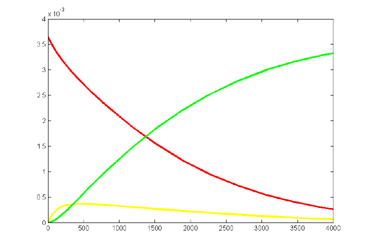

Stochastic Chemical Reaction Simulation
ECE 5760, Cornell University
Chemical reactions are often modeled as continuous differential equations
with reaction rates related to chemical concentrations (law
of mass action). As many have pointed out (e.g., Gillespie, Lok, Salwinski
and Eisenberg, or Keane, et.al.) reactions actually occur as discrete events
involving molecules. The reaction has some probability of occuring, but either
occurs, or does not. Thus we replace concentrations
with counting individual molecules and differential equations with rolling
the dice to see if a reaction occurs.
For a bimolecular reaction
involving two molecules A and B, with concentrations [A] and [B] and a rate
constant K, the probability of the reaction occuring (from mass action) will
be K[A][B] . Assuming a time step which is short enough to make
the probability of reaction small during the step, the mass action probability
is equal to the probability ([A]>randA && [B]>randB && K>randK). Where && is
the logical and operation, and randA, randB and randK are
uniform-distribution random numbers (Salwinski and Eisenberg and Keane, et.al.).
We can therefore replace the expensive multiplies with inexpensive logical
operations and random number generation. Random numbers were generated using
a linear
feedback shift register technique. The shift register length was chosen
so that only one xor operation was needed.
The first reaction scheme I implemented is a slightly expanded version
of the system presented in Salwinski and Eisenberg. Expansions were the ability
of several update events to occur for a given molecular species (as in Keane,
et.al.). Examples are below. Each chemical concentration is represented
by a 16-bit integer. Each reaction path can increment (+1), decrement (-1),
or not change the integer concentration of a chemical at each time step. The
restriction of only simple increment/decreement means that reaction probabilities
must be adjusted so that the likelyhood of changing the chemical concentration
by two or more is negligible. In practice the probability of reaction is set
to less than 0.01, so that the probability of two events occuring is less than
0.0001. Salwinski and Eisenberg limited the update so that only one reaction
could update any chemical at any time step. I added a queue so that several
reactions can update a chemical at each time step. The advantage of my scheme
is simpler reaction control, the disadvantage is a longer state machine on
each time step. Each time step is seven clock cycles, allowing six inc/dec
inputs per chemical per time step.
More generally, what we are doing here is approximating a truncated Poisson distribution of reaction events. We can make a better approximation by allowing concentrations to change by more than +1/-1. Let's say that we make the criterion that our approximation of the Poisson distribution has to cover 99.99% of the full distribution. Or, put differently, the cumulative sum of the discrete distribution has to be 0.9999 up to the point we truncate. I wrote a matlab program to plot the event number at which the cumulative probability reached 0.999 and 0.9999. The figure (left) shows the results. Keeping only one event per reaction time step limits us to a mean rate of 0.01 at 99.99% capture and about 0.03 at 99.9% event capture. For a mean reaction rate up to about 0.085/time step, keeping up to two events per reaction captures 99.99% of the events. Keeping three events allows reaction rates up to about 0.2/time step (at 99.99% capture). So using the 99.99% criterion, keeping two events instead of one event gives us about an 8-fold speed up, while keeping three events only gives us another factor of two above the two-event rate.
So what do we need to do to implement a maximum of two events? If we model
the two reactions as separated in space, and therefore independent, we need
to compute the probability of two completely independent reactions separately,
then decide if 0, 1 or 2 events occured. If either reaction occurs set the
inc/dec outputs to +1/-1. If both occur set the inc/dec outputs to +2/-2.
If neither occurs, inc/dec are zero. This seems to be a workable system and
was implemented below. A manuscript version of this description is here.
Reaction examples (maintaining two events: inc/dec by +2/+1/0/-1/-2).
Calibrate
The Calibrate code simulates a first order and second order reaction to give some feel for how many time steps are required for an e-folding decrease (for the first order system) or a equvalent decrease (non exponential) for the second order system.
- For a rate constant of 16'hffff (maximum value), which is fractional value 0.99998 = xffff/x10000, the measured time constant of the first order reaction is 32800+/-300 reaction-steps measured from the VGA display.
32800 ~= 128 VGA dots (horizontal) • 2^11 reaction-clocks/dot / 8 reaction-clocks/reaction-step
At lower rate constants, the e-folding time scales as it should. Also, the e-folding time is independent of the initial concentration, as it should be for a first-order reaction. The e-folding time of 32800 reaction steps can be rationalized in the following way: On average two reaction events happen with probability (molecule count)/2^16, or the expected change in molecule number per time step is (molecule count)/2^15. Writing the difference equation (letting x be the molecule count) gives
x(t+1) = x(t) - Δt*x(t)/2^15
This equation can be rearranged to a first order differential equation, from which it clear that the
time constant is 2^15=32,768.
- The second
order system used was
A+A->S. A second order reaction solution
is
a(t)=a(0)/(k•t•a(0)+1)
where k is the rate constant (units of 1/(#•timestep))
and a(0) is the initial fractional concentration. For a rate constant of
16'hffff (maximum value), which is fractional value 0.99998 = xffff/x10000,
and for an initial concentration of 4000, the 1/2 time (time at which t=1/(k•a(0)))
of the second order reaction is about 192,000 reaction steps. Halfing the
initial concentration doubles the 1/2 time.
Oregonator
The Oregonator system
is a chemical oscillator. This system was devised by Field and Noyes at the
University of Oregon (1974) and used by Gillespie (1977) as a test case for
an exact stochastic simulator method. The reaction scheme is:
X1 + Y2 → Y1 (rate c1)
Y1 + Y2 → Z1 (rate c2)
X2 + Y1 → 2Y1 + Y3 (rate c3)
Y1 + Y1 → Z2 (rate c4)
X3 + Y1 → Y2 (rate c5)
The X's represent large pools of chemical and do not change concentration during
simulation, so they are just constants. The Z's are reaction
products which are not reused and
therefore
do not need to be modeled.
The Oregonator code
(project archive)
takes about 16 million reaction steps to complete one reaction cycle measured
as the peak-to-peak cycle time (at max reaction rate). At 14.8 million reaction-steps/sec
on the FPGA, the real time is about 1.1 seconds per cycle. These timings are
with the rate constants turned up about as fast as possible using 16-bit rate
constants. The Oregonator system is stiff in
the sense that the rates of the reactions vary over a wide range. For instance,
over most of the cycle, the number of Y1 molecules is around 100. This means
that the probability of a reaction, Y1
+ Y1 → Z2
(rate c4), occuring on each time step is only (100/65536)2*(10496/65536)=3.7*10-7.
At the peak concentrations of reactant Y3 the rate of reaction of X3
+ Y1 → Y2 (rate c5) is 15000/655535*4000/655535*8192/655535
= 0.002, almost ten thousand times faster than the slower reaction above.
This means that you have to take small steps to capture the fast dynamics,
and take a lot of steps to get to one complete cycle. A matlab
version of the stochastic code takes about 1000 seconds (3.8 GHz P4 processor)
to compute one reaction cycle. The code does not vectorize well. The first
two cycles of the output is shown below.
On the left is the matlab result (xbar1=xbar2=xbar3=15000, y1(t=0)=500,
y2(t=0)=1000, y3(t=0)=2000, rates = [656 52224 32768 10496
8192] ) and on the right is a photo of the VGA display overlayed on
the matlab result. Amplitudes and times quantitatively match, but the two images
had to be scaled to account for the uncalibrated photograph of the VGA screen.

Michaelis–Menten kinetics
Michaelis–Menten kinetics where A + E ↔ AE → S + E was simulated
as a stochastic system on the FPGA and compared with an ODE solution in matlab. The
top-level module and
the matlab program (and function)
were set to k1=1,
k_1=k1/4096, k2=k1/256, E0=0.25/16, A0=1/16. The matlab program was
from a pdf by
A. van Oudenaarden at
MIT. On the left is the matlab result
and on the right is a photo of the VGA display overlayed on the matlab result.
Amplitudes and times quantitatively match, but the two images had to be scaled
to account for the uncalibrated photograph of the VGA screen. Note that in
the Verilog stochastic simulation the molecular amounts are given in number
of molecules, but should be interpreted as a fractional concentration,
where 0xffff represents a concentration of just below unity. Therefore
the initial condition of A=0x1000 in the Verilog code represents
a concentration of 0x1000/0xffff=1/16, and the same concentration
is used in the matlab code. Likewise, the values of the rate constants in the
Verilog code should be treated a fractions. The forward reaction rate k1 is
set to 0xffff or essentially unity fraction, whereas the reverse
rate constant is set to 0x0010, or fractionally 0x0010/0xffff=1/4096.

Keeping Michaelis–Menten kinetics, but dropping the matlab initial conditions
to E0=0.25*240/216,
A0=240/216 emphisizes
the difference between the ODE and stochastic solutions because there are only
about 30 enzyme molecules bound at peak (yellow curve). Fluctuations on the
order sqrt(30)=5.5
are expected,
or about 20% of the peak. Later in the simulation relative fluctuations become
bigger. The fractional concentrations in the matlab program correspond to integer
counts of 60 and 240 molecules in the stochastic Verilog hardware.

Improved Random number generators and serial data output
The 32-bit serial shift register used above has significant serial correlation because the 16-bit output is taken after only 8 shifts, leaving 8 bits the same. It is possible to parallelize the shift register to get more effective shits per clock cycle. Hoogland, et.al. describe a high quality random number generator designed for Ising model simulation. Using this 127-bit shift register with parallel 16-bit output triples the size of the reaction module. The following figure is taken from the paper and shows the parallelized feedback paths of the shift register. The inputs to to each 8-bit subsection are the xor of the two bits noted at the top of the column. I have not yet carried out statistical tests to see if the higher quality random numbers matter for the simulation. The 16-bit output is taken as bits 97 to 112 from fifteen 8-bit (and one 7-bit) shift registers. The improved Michaelis–Menten top-level module is here.
The 127-bit generator is overkill for a 16-bit random number (but works well for 32-bit computed in 2 cycles), so I scaled down the generator to a 63-bit version with feedback from bits 62 and 63 (one's based). The parallelized bit layout is the same as in the figure to the left, but truncated at 4 bits per register.The parallelized version has sixteen 4-bit shift registers loaded in parallel. For instance, on the same clock cycle,
bit62 xor bit63 is shifted into shift register 16,
bit61 xor bit62 is shifted into shift register 15,
bit48 xor bit49 is shifted into shift register 2, and
bit47 xor bit48 is shifted into shift register 1.
The Michaelis–Menten top-level module with 63-bit shift register is here. The Oregonator is here. The Oregonator example uses about 9% of the Altera DE2 board FPGA logic element resources.
The design was extended to include serial output of a waveform so that a better comparision could be made with the Matlab differential equation versions. The serial module takes a 16 bit number and converts it to 4-digit hexadecimal terminated with <crlf> characters so that a call to Matlab fscan(s, '%x') can read it, where s is a serial object. The Michaelis–Menten top-level module with 127-bit shift register and serial is here (project archive). The Matlab code to read the hex is here as is the ODE analysis program (and function).
Results for substrate concentrations of 240/2^16 and 4096/2^16 are shown below. Notice the fluctuations are greater for the smaller number of molecules on the left. The linked Verilog and Matlab programs are coded for the higher concentration. Black lines are the Matlab differential equation code, color lines are the FPGA output.
Repeating the stochastic simulations with different random number seeds yields the following results for the two cases shown above.
The Oregonator with 63-bit random number generator was also modified for serial output (archive). The output was compared to a Matlab simulation of the same stochastic algorithm. The matlab version took 870 seconds to run on my desk machine (3.2 GHz Core Duo with 8 Gbyte memory) and 8 seconds to run on the FPGA. Note that there are some significant differences between the two simulation outputs. These diffferences seem to depend on the random number seed used and so are probably related to random fluctuations in chemical concentration. Black lines are the Matlab stochastic code, color lines are the FPGA stochastic output. The image to the right is the FPGA stochastic simulation compared to an ODE code (and function) in Matlab. In this case the amplitudes seem correct, but the period of the oscillation seems to drift.
\
To get more feeling for the variability of the stochastic solution, I compared seven runs with different random number seeds against the ODE Matlab model. The following images show the first three peaks and a zoom on the right-most peak. The black dots are the Matlab ODE solution. The colored lines are the seven FPGA stochastic solutions. There are a few communications glitches on the FPGA solutions.
Older, simpler, version --
Reaction examples (maintaining just one event: inc/dec by +1/0/-1).
A video version of the Oregonator (described below) was written. The zipped version is here with all the supporting VGA hardware. In the VGA image below, Y1 is in red, Y2 is green and Y3 is yellow. The image compares well with the Gillespie (1977) results. The video horizontal scale is scaled to 224 reaction cycles per video time step for the first image and 223 for the second image. The video vertical scale is such that each vertical dot is 16 molecules. This project used a modified VGA PLL to run the reaction clock at 108 MHz. The timing analyser says that the design should not work, but it seems quite stable. About 1060 logic elements were used on the FPGA (3%) and about half of the on-chip m4k memory blocks. The m4k blocks hold the video buffer, with 4-bits/pixel.

The Oregonator example used by Gillespie (1977) as a test case was used to test a more general chemical model.
top-level module and PLL. The PLL was used to speed up the execution to 130 MHz. About 756 logic elements were used on the FPGA (2%).
This system is a chemical oscillator. The reaction scheme is:
X1 + Y2 → Y1 (rate c1)
Y1 + Y2 → Z1 (rate c2)
X2 + Y1 → 2Y1 + Y3 (rate c3)
Y1 + Y1 → Z2 (rate c4)
X3 + Y1 → Y2 (rate c5)
The X's represent large pools of chemical and do not change concentration during simulation. The Z's are reaction products which are not reused. The system was validated by scaling the rate constants to the values given in Gillespie (1977) and then checking the ratios of the peak values of Y1, Y2, and Y3 as they all cycle. The reaction clock was set to 130 MHz using the PLL, which gave a few tenths of a nanosecond of timing slack for this model. SW[0] controls Y1 vs Y3 display. SW[0] down displays Y1. This model with 3 chemicals and 5 reactions uses about 1.5% of the FPGA on the DE2 board.
The following examples run fairly slowly so that you can watch the reactions run on the LED displays on the DE2 board. They were used to debug the modules and explore limitations of the modeling.
A ↔ S with rates Kf and Kb (forward and backward rates).
top-level module
The basic check on this design is to make sure that the steady-state concentrations are Kf [A] =
Kb[S] where concentrations are in fractions of 216.
A + A ↔ S
top-level module
The basic check on this design is to make sure that the steady-state concentrations are Kf [A]2 =
Kb[S] where concentrations are in fractions of 216. So if Kf=Kb
S=(A/216)2 * 216S=
A*A/65536.
Michaelis–Menten kinetics: A + E ↔ AE → S + E
top-level module
A video version (below) shows the substrate (A) in red, the AE intermediate in green and the product (S) in yellow. See the Oregonator example above for PLL and video support code. The example started with about 240 A and 200 E molecules. The stocastic nature of the reactions is clearly visible. There are 218 time steps between each point on the screen. Vertical scale is 240 molecules full screen.
References.
John F. Keane, Christopher Bradley, Carl Ebeling, A Compiled Accelerator
for Biological Cell Signaling Simulations Cell Systems, International Symposium
on Field Programmable Gate Arrays archive Proceedings of the 2004 ACM/SIGDA 12th
international symposium on Field programmable gate arrays table of contents Monterey,
California, USA SESSION: Pages: 233 - 241, 2004
Salwinski L, Eisenberg D., In silico simulation of biological network dynamics. Nat Biotechnol. 2004 Aug;22(8):1017-9. Epub 2004 Jul 4.
Larry Lok, The need for speed in stochastic simulation , Nature Biotechnology 22, 964 - 965 (2004) doi:10.1038/nbt0804-964
Lok L, Brent R., Automatic generation
of cellular reaction networks with Moleculizer 1.0. , Nat Biotechnol. 2005
Jan;23(1):131-6.
D. Gillespie, Exact Stochastic Simulation of Coupled Chemical Reactions,
Journal of Physical Chemistry, No. 81, pp. 2340-2361, 1977.
Daniel T. Gillespie, Stochastic Simulation of Chemical Kinetics, Annu. Rev. Phys. Chem. 2007.58:35-55
Hong Li,Yang Cao,Linda R. Petzold, and Daniel T. Gillespie, Algorithms and Software for Stochastic Simulation of Biochemical Reacting Systems, Biotechnol Prog. 2008; 24(1): 56–61. Published online 2007 September 26. doi: 10.1021/bp070255h.
Jürgen Pahle, Biochemical simulations: stochastic,
approximate stochastic and hybrid approaches, Brief Bioinform. 2009 January;
10(1): 53–64. Published online 2009 January 16. doi: 10.1093/bib/bbn050.
R. J. Field, R. M. Noyes, Oscillations in Chemical Systems IV. Limit cycle
behavior in a model of a real chemical reaction, J. Chem. Phys. 60(1974)1877-84.
A. Hoogland, J. Spaa, B. Selman and A. Compagner, A special-purpose processor for the Monte Carlo simulation of ising spin systems, Journal of Computational Physics, Volume 51, Issue 2, August 1983, Pages 250-260


{kind=link}
{kind=link}
{kind=link}
{kind=link}
{kind=link}
{kind=link}
{kind=link}
{kind=link}
{kind=link}
{kind=link}
{kind=link}
{kind=link}
{kind=link}
{kind=link}